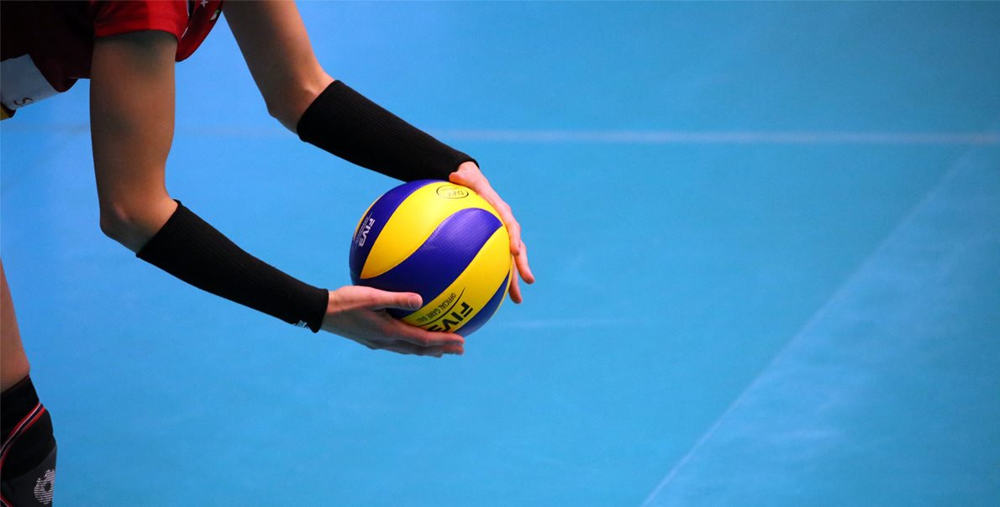

Napsala: Ela Štercová
Datum: 5.5.2026
Skoro celý život se pohybuji v prostředí, ve kterém je středobod volejbal. A to mě naučilo, že tu existují dva typy lidí. První, jsou ti, kteří aktivně hrají a volejbal jejich život asi nikdy neopustí. Nejen že hrají, ale ve hře jsou pořád. Sledují míč, spoluhráče a přemýšlí o všech krocích dopředu. I když se jich míč zrovna netýká, jsou vždy na špičkách, připraveni do akce. Vědí, kam si stoupnout a jaký bude jejich další krok. Nikdy v poli jen tak “nestojí”, vždy jsou naprosto soustředění na hru. Pak jsou tu ale ti druzí. Přijdou si zahrát, ale jen tak nějak napůl. Jednou odbíjí míč, pak se začnou dívat kolem sebe a hra jako by je ani zas tak moc nezajímala. Nejčastěji od nich uslyšíme větu: „Počkej, já to nečekal.“ - přidají k tomu ještě otrávený tón, jako by to byla chyba toho, kdo do míče udeřil. Chvíli se věnují hře, chvíli stojí a potom vypadají, že jsou myšlenkami úplně někde jinde. Mít takové spoluhráče je spíše „za trest” a každého, kdo tu hru bere vážně to štve. Vůbec nejsem proti tomu, aby si lidé zahráli jen tak. Volejbal nemusí být vždy dokonale promyšlený výkon. Může to být relax, zábava a setkání se s ostatními. Ale i tak mi přijde zvláštní, jak někdo, kdo hraje volejbal několik let, nebo třeba i závodně se tomu nemůže věnovat naplno. Přitom právě i v těch nejnapínavějších a nejnáročnějších chvílích má volejbal své kouzlo. Hráč stojí na podání, na chvíli se všechno uklidní. Všichni čekají, sledují míč. Když nahrávač zvedne míč, věří, že smečař udělá svou práci. Když libero skočí po zdánlivě ztraceném balónu, věří, že jeho spoluhráči nezaváhají. Na každém tomto okamžiku záleží, na každém hráči záleží.
